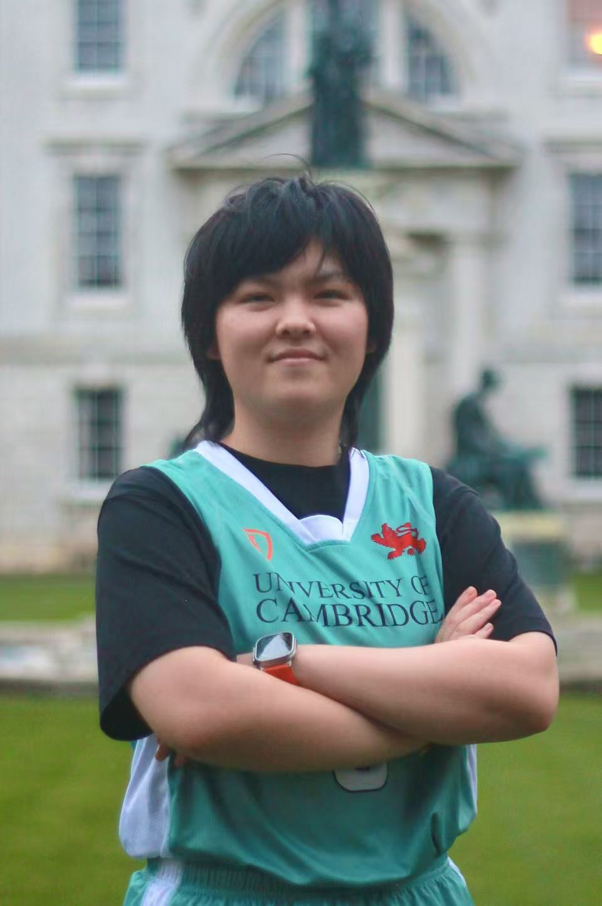
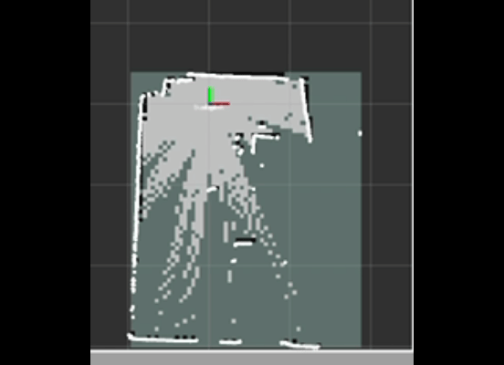
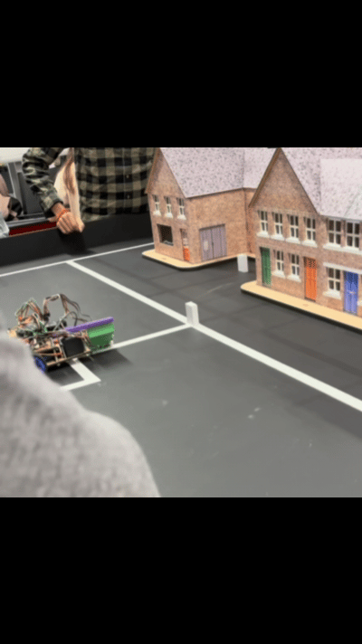
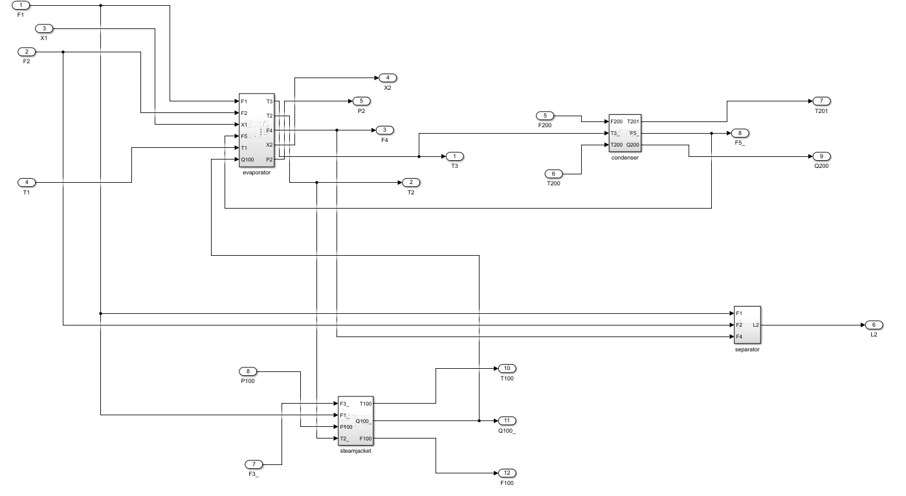
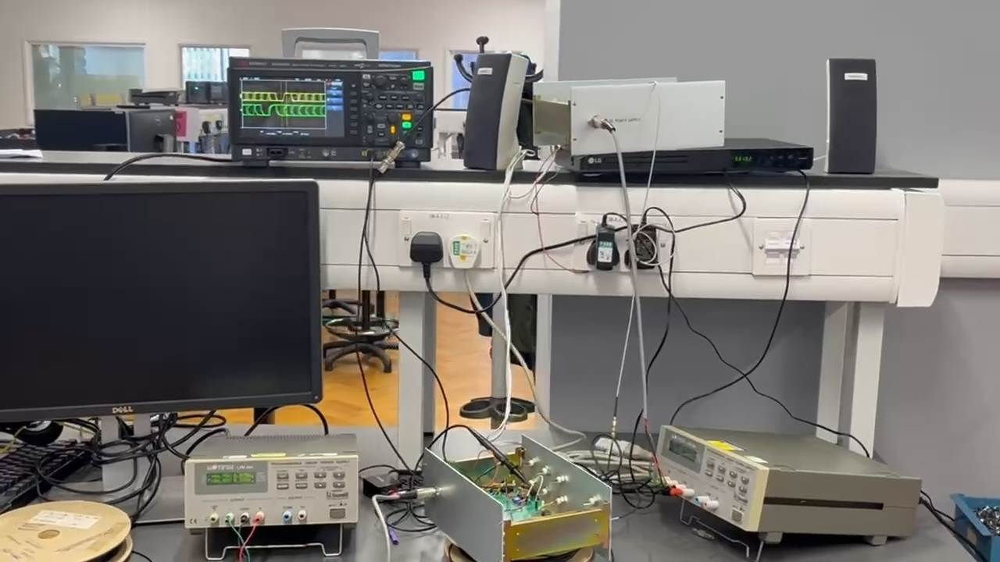

Multivariable Control of a Nonlinear Industrial Evaporator
Design and comparative evaluation of decentralised PI, gain-scheduled, state-feedback and LQR controllers, including robustness analysis and anti-windup compensation.
Read technical report
I am a final-year MEng student in Engineering at the University of Cambridge (Murray Edwards College), specialising in Electrical and Electronic Engineering and a recipient of the Mary Dyson Scholarship. My research interests lie in robotics, particularly state estimation, decision-making and control, with an interest in learning-based methods and their integration with physical robotic systems.

Supervised by Prof. Claudel
Evaluated and implemented multi-modal state estimation algorithms for mobile platforms in dynamic environments. Investigated IMU dead-reckoning and wheel-command-based motion estimates, monocular ORB-SLAM2, and 2D LiDAR-based localisation. Developed a Raspberry Pi-to-ROS 2 LiDAR data bridge to support ongoing testing and integration.

Led the electrical sub-team at Cambridge to construct an autonomous mobile robot from scratch. Designed custom adapter PCB interface boards, programmed PicoBot microcontrollers for low-latency reactive control, and calibrated optical, ultrasonic, and magnetic sensor arrays.

Designed and evaluated control strategies for a nonlinear industrial evaporator, progressing from decentralised PI control to gain scheduling, state feedback with integral action, and LQR. Investigated robustness to operating-point and parameter variations, actuator saturation, and cross-coupling between controlled variables.

Designed and experimentally characterised the automatic gain control and high-speed comparator stages of a team-developed 2 Mbit/s polymer optical fibre communication link. Prototyped and debugged analogue circuitry, implemented hysteresis-based digital recovery, and contributed to end-to-end integration and eye-diagram characterisation over a 20 m fibre channel.
Selected technical reports based on coursework and engineering projects completed at the University of Cambridge.
Design and comparative evaluation of decentralised PI, gain-scheduled, state-feedback and LQR controllers, including robustness analysis and anti-windup compensation.
Read technical reportDesign and experimental validation of AGC and comparator stages for a 20 m optical communication link, including signal-integrity and eye-diagram measurements.
Read technical report